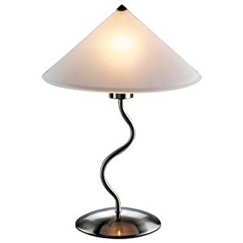
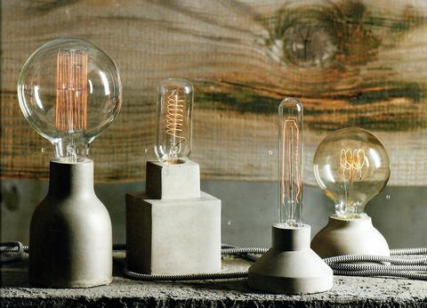

The History of Lamps
 Since the dawn of the humanity, men tried to create light and chase away the darkness. In that endeavor, he came a long way. Evidences of the first lamps used by early humans date back to 70.000BC. They were of simple structure - just a shell or a hollow rock, which holds piece of moss soaked in animal fat that burns with a flame. Since those times, people used other materials for a body of the lamp - terracotta, marble and metal and instead of fat, oil was used (fish and olive oil). Wick was also often added to prolong burning of the flame and to focus it. Oil lamps were the most widespread method of illumination until the end of the 18th century.
As the time passed, and new energy sources were discovered, new kinds of lamps were invented. In the 19th century, the kerosene lamps were introduced in Germany. It was a container with a kerosene in which wick or mantle was dipped that burned. Container had glass chimney or a globe, which protected flame from a draft.
Last decades of the 18th century saw the first commercial use of coal gas for lightning the house. Coal gas was transported to the place of consumption by pipes and led into the lamps. In the early 19th century, most of the cities in the Europe and United States have their streets lit with gas light. Source.